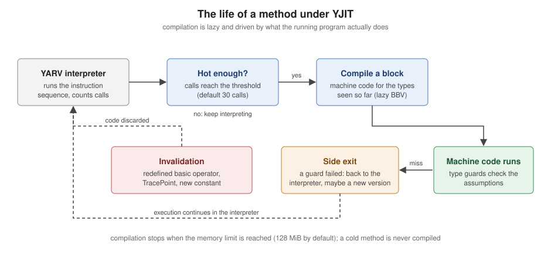

YJIT, ZJIT and the VM
|
This content was generated with the assistance of AI and should be verified against the official documentation before being relied on in production. |
This page is written against Ruby 4.0 (4.0.7, checked on 2026-10-18); features newer than Ruby 3.0 name the version that introduced them. CRuby, the reference implementation, does not interpret source text line by line. It parses a whole file into a syntax tree, compiles the tree into YARV instruction sequences (YARV is the stack-based virtual machine, "Yet Another Ruby VM"), and runs them in a bytecode interpreter. Since Ruby 3.1 an optional just-in-time compiler, YJIT, can translate the hot parts of those instruction sequences into machine code while the program runs. Ruby 4.0 adds a second, experimental compiler, ZJIT. This page walks through the pipeline in order: the parser (Prism), the instruction sequences and how to look at them, YJIT (how it works, how to enable and tune it, how to read its statistics, and what makes code fast or slow under it), ZJIT, and the older JIT designs that were removed. For the broader picture of how a file is run see Getting Started; the command-line flags mentioned here are collected in Ruby Command Line and Environment; measuring whether a change really made code faster is the subject of Performance, Benchmarking and Profiling; and the memory side of the runtime is in Garbage Collection and Memory.
Every example was syntax-checked with ruby -wc, run with ruby -w on Ruby 4.0.7 and linted with RuboCop 1.92 using the
configuration of the running shelf gem. The output shown is the real output of the installed build, an official macOS arm64 binary that
includes YJIT and, as the examples show, was built without ZJIT. Timings depend on the machine (they were taken on an arm64 Mac) and
are given to show the shape of an effect, not as benchmarks. Each file is self-contained and carries a trimmed copy of the shelf
code it uses.
The execution pipeline
| Stage | What happens | Where to look at it |
|---|---|---|
Parse |
The source file is read as a whole and turned into a syntax tree. A syntax error stops the program before any line runs, which is
why |
|
Compile |
The tree is compiled into an instruction sequence (an "iseq") per method, block, class body and the main program. |
|
Interpret |
The YARV interpreter executes the instructions on a value stack. Call sites carry inline caches, and common operators have specialised instructions. |
|
JIT (optional) |
A compiler turns frequently run instruction sequences into machine code and falls back to the interpreter when its assumptions fail. |
|
The books that describe Ruby as "parsed and executed line by line" (DiLeo, p. 8) are describing the old mental model of a simple interpreter. CRuby compiles to bytecode before running anything. The accurate current description is: the whole file is parsed by Prism, compiled to YARV instructions and run by the VM, optionally with YJIT.
Prism, the default parser
Ruby’s parser was long generated from a yacc grammar (parse.y). Prism, a portable, error-tolerant
recursive-descent parser, was added as a default gem in Ruby 3.3 and became the default parser in Ruby 3.4. Ruby 4.0 builds report it
in the version string as +PRISM. The old parser is still available for debugging and comparison with --parser=parse.y, and
--parser=prism selects Prism explicitly.
Prism is also a library: the prism gem parses Ruby source into a tree of node objects that tools (linters, formatters, language servers) can use, and the Ruby 4.0 documentation of RubyVM::AbstractSyntaxTree names it as the
official Ruby API for parsing Ruby code. The older RubyVM::AbstractSyntaxTree is
documented as experimental, MRI specific and not stable, and Ripper is the older, event-based alternative.
# frozen_string_literal: true
require "prism"
source = "price = base * 2 + tax"
result = Prism.parse(source)
puts result.success?
program = result.value
puts program.class
assignment = program.statements.body.first
puts assignment.class
puts assignment.name.inspect
puts assignment.value.class
puts assignment.value.receiver.class
broken = Prism.parse("def title(")
puts broken.success?
puts broken.errors.first.message
puts Prism.parse_success?("[1, 2, 3].sum")
ast = RubyVM::AbstractSyntaxTree.parse("puts(1 + 2)")
puts ast.type
puts ast.children.last.typeOutput:
true
Prism::ProgramNode
Prism::LocalVariableWriteNode
:price
Prism::CallNode
Prism::CallNode
false
unexpected end-of-input; expected a `)` to close the parameters
true
SCOPE
FCALLThe syntax tree for base * 2 + tax is a call to + whose receiver is a call to *, which is how operator precedence shows up in
the tree. Prism keeps parsing after an error and collects every problem in errors, which is why editors can offer help on
half-typed code.
The command line can print either tree without writing any code. ruby --dump=parsetree -e 'a = 1 + 2' prints the Prism tree (a
ProgramNode with a LocalVariableWriteNode below it), and --dump=insns prints the instruction sequences, which is the next topic.
The dump option also accepts yydebug, syntax, version, copyright, usage and help, plus modifiers such as -optimize
(disable optimisation for insns) and +error-tolerant.
YARV instruction sequences
An instruction sequence is the compiled form of one body of code. The compiler emits one iseq for the main program and one for each
method, block and class body. RubyVM::InstructionSequence exposes them: compile turns a string into an
iseq, of returns the iseq behind a Method or Proc, disasm shows the instructions, and to_binary and load_from_binary
serialise a compiled sequence. The class is documented as MRI specific:
its methods and its output can change in any release, so use it to learn and to debug, not as a stable interface.
# frozen_string_literal: true
source = <<~RUBY
def checksum(digits)
sum = 0
digits.each_with_index { |d, i| sum += i.even? ? d : d * 3 }
sum % 10
end
RUBY
iseq = RubyVM::InstructionSequence.compile(source, "checksum.rb")
puts iseq.disasmOutput:
== disasm: #<ISeq:<compiled>@checksum.rb:1 (1,0)-(5,3)>
0000 definemethod :checksum, checksum ( 1)[Li]
0003 putobject :checksum
0005 leave
== disasm: #<ISeq:checksum@checksum.rb:1 (1,0)-(5,3)>
local table (size: 2, argc: 1 [opts: 0, rest: -1, post: 0, block: -1, kw: -1@-1, kwrest: -1])
[ 2] digits@0<Arg>[ 1] sum@1
0000 putobject_INT2FIX_0_ ( 2)[LiCa]
0001 setlocal_WC_0 sum@1
0003 getlocal_WC_0 digits@0 ( 3)[Li]
0005 send <calldata!mid:each_with_index, argc:0>, block in checksum
0008 pop
0009 getlocal_WC_0 sum@1 ( 4)[Li]
0011 putobject 10
0013 opt_mod <calldata!mid:%, argc:1, ARGS_SIMPLE>[CcCr]
0015 leave ( 5)[Re]
== disasm: #<ISeq:block in checksum@checksum.rb:3 (3,25)-(3,62)>
local table (size: 2, argc: 2 [opts: 0, rest: -1, post: 0, block: -1, kw: -1@-1, kwrest: -1])
[ 2] d@0<Arg> [ 1] i@1<Arg>
0000 getlocal_WC_1 sum@1 ( 3)[LiBc]
0002 getlocal_WC_0 i@1
0004 opt_send_without_block <calldata!mid:even?, argc:0, ARGS_SIMPLE>
0006 branchunless 12
0008 getlocal_WC_0 d@0
0010 jump 18
0012 getlocal_WC_0 d@0
0014 putobject 3
0016 opt_mult <calldata!mid:*, argc:1, ARGS_SIMPLE>[CcCr]
0018 opt_plus <calldata!mid:+, argc:1, ARGS_SIMPLE>[CcCr]
0020 dup
0021 setlocal_WC_1 sum@1
0023 leave [Br]The listing shows the structure of the machine. There are three iseqs: the top level, which only defines the method; the method body; and the block body. Each shows its local table (the local variables and parameters, with their slot numbers) and then numbered instructions. A few things are worth reading off it:
-
The VM is a stack machine.
getlocal_WC_0 digits@0pushes a local variable,putobject 10pushes a constant operand, andopt_modpops two values and pushes the result of%.leavereturns the top of the stack, which is why the last expression of a method is its return value. -
getlocal_WC_1 sum@1in the block reads a variable of the enclosing scope (the suffix counts the scopes to climb, here one), which is how closures reach the variable they share with the method. -
putobject_INT2FIX_0_is a specialised form ofputobjectwith the value built into the instruction. Specialisations like this one (operands unification) and the fusing of common instruction pairs (instructions unification) are options of the iseq compiler and exist only to save dispatch time. -
Operators such as
+,*,%andeven?-style calls compile toopt_instructions. These have a fast path for the common receiver types (foropt_plus, two integers) and fall back to a normal method call when the receiver is something else or when the operator has been redefined. A plain call compiles tosendoropt_send_without_block, whosecalldataoperand carries the method name, argument count and flags, and doubles as the inline cache for that call site. -
The annotations in square brackets at the end of a line (such as
[Li]for a line event,[Re]for a return event and[Bc]and[Br]for block call and return events) are trace markers. The ones next to theopt_instructions describe call-site caches and are not decoded further here.
The same listing is available without writing code: ruby --dump=insns file.rb prints the instruction sequences of a file before
running it, and -e works too.
$ ruby --dump=insns -e 'puts 1 + 2'
== disasm: #<ISeq:<main>@-e:1 (1,0)-(1,10)>
0000 putself ( 1)[Li]
0001 putobject_INT2FIX_1_
0002 putobject 2
0004 opt_plus <calldata!mid:+, argc:1, ARGS_SIMPLE>[CcCr]
0006 opt_send_without_block <calldata!mid:puts, argc:1, FCALL|ARGS_SIMPLE>
0008 leaveInstruction sequences also have a programmatic description. The next example reads the metadata of a method’s iseq, takes the whole
structure as an array (to_a, whose layout is documented as version dependent), round-trips a sequence through its binary form,
evaluates a freshly compiled one and reads the compiler options.
# frozen_string_literal: true
def total(prices) = prices.sum
iseq = RubyVM::InstructionSequence.of(method(:total))
puts iseq.label
puts iseq.first_lineno
puts File.basename(iseq.path)
magic, major, minor, format, _misc, label, _path, _abs, line, type, locals, = iseq.to_a
puts [magic, major, minor, format].inspect
puts [label, line, type, locals].inspect
copy = RubyVM::InstructionSequence.load_from_binary(iseq.to_binary)
puts copy.label
puts RubyVM::InstructionSequence.compile("6 * 7").eval
options = RubyVM::InstructionSequence.compile_option
puts options.slice(:inline_const_cache, :peephole_optimization, :frozen_string_literal).inspectOutput:
total
3
iseq_api.rb
["YARVInstructionSequence/SimpleDataFormat", 4, 0, 1]
["total", 3, :method, [:prices]]
total
42
{inline_const_cache: true, peephole_optimization: true, frozen_string_literal: nil}RubyVM::InstructionSequence.compile_option= changes the options for iseqs compiled afterwards (for example turning the peephole
optimiser or the inline constant cache off), which is occasionally useful when comparing instruction output. compile_prism and
compile_parsey compile with a specific parser, and RubyVM.keep_script_lines keeps the source lines around for tools that
need them. Programs that want to see what the VM is doing while it runs use TracePoint, covered in
Reflection, Introspection and Tracing; as shown later in
this page, enabling one has a cost under a JIT.
Caches and the VM’s own statistics
Method calls, constant lookups and instance variable reads would be slow if each one searched from scratch. The VM caches the result
at each site, and the caches are invalidated when the facts they rely on change. RubyVM.stat exposes counters for this machinery.
In Ruby 4.0 it reports constant_cache_invalidations, constant_cache_misses, global_cvar_state, next_shape_id and
shape_cache_size. The shape counters belong to object shapes, the instance-variable caching mechanism added in Ruby 3.2, which improves inline cache hits for most objects (best for
objects whose instance variables are always defined in the same order) and, according to the 3.2 NEWS, lets YJIT generate very
efficient code.
# frozen_string_literal: true
LIMIT = 10
before = RubyVM.stat
def read_limit = LIMIT
read_limit
Object.send(:remove_const, :LIMIT)
Object.const_set(:LIMIT, 20)
after = RubyVM.stat
puts read_limit
puts after[:constant_cache_invalidations] - before[:constant_cache_invalidations]
puts RubyVM.stat(:next_shape_id).classOutput:
20
2
IntegerSource: Ruby 4.0 documentation: RubyVM
Removing and redefining a constant invalidated the caches that referred to it (two invalidations in this run). Constant
invalidation became fine-grained in Ruby 3.2, so defining a new constant no longer throws away every cached lookup in the process, and
the 3.2 release removed the older :global_constant_state key in favour of the two constant-cache counters. The practical advice
that follows is the usual one: treat constants as constants, and do not redefine methods or constants on a hot path of a running
program.
YJIT
YJIT is a JIT compiler written in Rust and built into CRuby. It was introduced as an experimental option in Ruby 3.1 (x86-64 Unix-like systems only), declared no longer experimental in Ruby 3.2, which also added arm64 support (macOS on Apple silicon, AWS Graviton, Raspberry Pi), and has been improved in every release since. The YJIT document lists macOS, Linux and BSD on x86-64 and arm64 as the supported platforms.
Its architecture is called lazy basic block versioning (BBV). Instead of compiling a whole method when it becomes hot, YJIT compiles one basic block (a straight run of instructions) at a time, and only when execution reaches it. While compiling a block, it knows the types of the values the interpreter has actually seen there, so it generates machine code specialised for those types, with cheap guards that check the assumption. If a guard fails, the compiled code takes a side exit back to the interpreter, and YJIT may compile another version of the block for the new types. The code that runs is therefore specialised to the program’s real behaviour, and code that never runs is never compiled.

The consequences follow from the design. There is a warm-up: a method runs in the interpreter for its first calls (30 by default, a
threshold that the documentation says rises to 120 once the process holds 40,000 instruction sequences), then it is compiled, and a
large application needs time before most of its hot code is compiled. Machine code and the metadata that describe it use memory, so a
process with YJIT uses more memory than one without (the default limit is 128 MiB). And anything that invalidates the assumptions
(redefining a basic operator, enabling a TracePoint, defining constants that compiled code relied on) throws compiled code away.
Is it available, is it on?
The version string tells you what was built: ruby -v prints +YJIT when the build includes the compiler and +PRISM
for the parser. Whether it is switched on for the current process is a separate question, answered by RubyVM::YJIT.enabled?. A
distribution or a version manager may build Ruby without YJIT; building it needs the Rust compiler (rustc, version 1.58.0 or later
according to the YJIT documentation) and the --enable-yjit configure option.
$ ruby -v
ruby 4.0.7 (2026-09-15 revision 229531a6cf) +PRISM [arm64-darwin23]
$ ruby --yjit -v
ruby 4.0.7 (2026-09-15 revision 229531a6cf) +YJIT +PRISM [arm64-darwin23]
$ ruby --yjit -e 'p RubyVM::YJIT.enabled?'
trueSource: Ruby 4.0 documentation: YJIT
The first line shows that the build supports YJIT (it is listed in the second line only because --yjit was passed). The
ruby --help text lists --jit as "the default JIT for the build; same as --yjit`" and `--yjit as the in-process JIT compiler.
Turning it on
There are three ways to enable YJIT, and they differ in when it starts.
| Method | When to use it |
|---|---|
|
From the first instruction, for a command line you control. |
|
For deployments where changing the command line is awkward (a Procfile, a container entry point, a gem that runs |
|
From Ruby code, usually once the application has finished loading. The compiler then skips the boot code that runs only once, and a forking server can call it in the child process after the fork. |
RubyVM::YJIT.enable returns true when it switched the compiler on and false when it was already on. Ruby 3.4 added the log:
keyword, and Ruby 4.0 added mem_size: and call_threshold:. Any --yjit- option on the command line starts YJIT at boot, and
--yjit-disable starts Ruby with it off, so that tuning options can be given while the actual switch-on happens later in code.
# frozen_string_literal: true
puts "built with YJIT: #{defined?(RubyVM::YJIT) ? true : false}"
puts "enabled at start: #{RubyVM::YJIT.enabled?}"
started = RubyVM::YJIT.enable(mem_size: 64, call_threshold: 10)
puts "enable returned: #{started}"
puts "enabled now: #{RubyVM::YJIT.enabled?}"
puts "second enable returned: #{RubyVM::YJIT.enable}"
puts "stats enabled: #{RubyVM::YJIT.stats_enabled?}"
puts "log enabled: #{RubyVM::YJIT.log_enabled?}"
puts RUBY_DESCRIPTION.include?("+YJIT")Output of ruby -w yjit_state.rb:
built with YJIT: true
enabled at start: false
enable returned: true
enabled now: true
second enable returned: false
stats enabled: false
log enabled: false
trueWith RUBY_YJIT_ENABLE=1 ruby -w yjit_state.rb the first state line becomes enabled at start: true and the first enable
returns false, because the compiler was already on. With --yjit-stats=quiet, stats enabled becomes true.
A script that must also run on Ruby builds without YJIT (an older Ruby, a Windows build, a distribution package) guards the call
with defined?(RubyVM::YJIT), as the first line of the example does, because on a build without the compiler the constant does not
exist and referring to it raises NameError.
Options
The options below are the YJIT entries of ruby --help on the installed 4.0.7 build, with the defaults that the help text and the
4.0 YJIT document give.
| Option | Meaning |
|---|---|
|
Enable the compiler. |
|
Soft limit on total YJIT memory (compiled code plus metadata) in MiB; default 128. YJIT tries to keep |
|
Hard limit on the executable memory block, in MiB. |
|
Number of calls after which a method is compiled; the document gives 30, raised automatically to 120 in a large process. |
|
Number of global calls after which a method that has not been compiled is considered cold and never compiled (default 200 thousand). |
|
Collect statistics, print them at exit ( |
|
Log the compilation activity. With no argument the last 1024 entries are printed when the process exits. |
|
Start with YJIT off so that it can be enabled later with |
|
Free all compiled code when the size limit is reached, then start over. Off by default since Ruby 3.3. |
|
Enable frame pointers and write symbols for the compiled code so that Linux |
|
Record the Ruby source location of every (or every Nth) exit from compiled code. Turns statistics on. |
The options can also be given through RUBYOPT (the YJIT document uses RUBYOPT=--yjit-stats as its example). The tuning choices are few. Raise --yjit-mem-size if the statistics show that a
large share of instructions still run in the interpreter, lower it if the extra memory is a problem, and prefer RubyVM::YJIT.enable
after boot to avoid compiling code that runs once.
Statistics, logs and what YJIT compiled
RubyVM::YJIT.runtime_stats returns a hash of counters, RubyVM::YJIT.stats_string a formatted text, and reset_stats! zeroes the
counters. The set of counters is not guaranteed to stay the same between versions, and most are for people who work on the compiler.
Since Ruby 3.4 the basic ones are always available; running with --yjit-stats adds the detailed ones. In Ruby 4.0 the share of
instructions executed by compiled code, ratio_in_yjit, is only available in a YJIT build configured with --enable-yjit=stats (a
4.0 change), which is why the example below prints nil for it on this release build.
# frozen_string_literal: true
def checksum(digits)
digits.each_char.with_index.sum { |d, i| i.even? ? d.to_i : d.to_i * 3 }
end
20_000.times { checksum("9780306406157") }
stats = RubyVM::YJIT.runtime_stats
puts stats[:compiled_iseq_count].positive?
puts stats[:inline_code_size].positive?
puts stats.keys.grep(/code_region|yjit_alloc/).sort.inspect
p stats[:ratio_in_yjit]Output of ruby --yjit -w yjit_stats.rb:
true
true
[:code_region_size, :yjit_alloc_size]
nilcode_region_size plus yjit_alloc_size is the figure that --yjit-mem-size limits. With --yjit-stats the same program prints a
report at exit, whose last lines look like this (abridged):
side_exit_count: 2
total_exit_count: 279,942
yjit_insns_count: 2,719,318
avg_len_in_yjit: 9.7
Top-1 most frequent exit ops (100.0% of exits):
2 (100.0%): opt_send_without_block
Top-4 most frequent C calls (100.0% of C calls):
259,969 (81.3%): String#to_i
19,971 ( 6.2%): Enumerator#with_index
19,971 ( 6.2%): String#each_char
19,971 ( 6.2%): Enumerable#sumSource: Ruby 4.0 documentation: YJIT
That report is the main diagnostic. side_exit_count and the exit_ counters say why compiled code returned to the interpreter,
the "most frequent exit ops" list says which instructions caused it, and the C-call and ISEQ-call lists say where time goes. A program
that runs mostly in compiled code and rarely exits is well served. If a hot method keeps showing up as an exit source, look at what
it does (a polymorphic call site, a binding, a feature YJIT does not compile yet) before adjusting any option.
The compilation log shows what was compiled and when. RubyVM::YJIT.enable(log: true) (or --yjit-log) keeps a circular buffer,
RubyVM::YJIT.log returns it as [Time, String] pairs, and log_enabled? reports whether it is on.
# frozen_string_literal: true
RubyVM::YJIT.enable(log: true, call_threshold: 5)
def checksum(digits)
digits.each_char.with_index.sum { |d, i| i.even? ? d.to_i : d.to_i * 3 }
end
50.times { checksum("9780306406157") }
entries = RubyVM::YJIT.log
puts RubyVM::YJIT.log_enabled?
puts entries.first.map(&:class).inspect
puts entries.map(&:last).grep(/\Achecksum/).first(2)Output (standard error, where the log is also dumped at exit, is discarded):
true
[Time, String]
checksum@yjit_log.rb:6 (index: 0)
checksum@yjit_log.rb:6 (index: 0)The same name appears twice with index: 0 because lazy block versioning compiled two versions of the method’s first block. The
index is the position inside the instruction sequence where the block starts. RubyVM::YJIT.insns_compiled(method) returns the list
of instructions compiled for a method (as a flat array of offsets and names), and RubyVM::YJIT.disasm prints the generated machine
code, but only in a YJIT built in development mode: on this release build it prints that it "is only available when YJIT is built in
dev mode" and returns nil.
# frozen_string_literal: true
RubyVM::YJIT.enable(call_threshold: 1)
def triple(value) = value * 3
5.times { triple(7) }
puts RubyVM::YJIT.insns_compiled(method(:triple)).each_slice(2).map(&:last).inspectOutput:
[:getlocal_WC_0, :putobject, :opt_mult, :leave]That is exactly the instruction sequence of the method, so every instruction of triple was compiled.
What YJIT speeds up, and what it does not
YJIT removes the interpreter’s overhead: instruction dispatch, repeated type checks, stack traffic for locals. It does not make the work done by C functions faster, and it cannot remove allocation. The next example measures both kinds of work in one program. The first method builds an array of integers and an enumerator for each call (the style of code the books use for a checksum), the second walks the bytes of the string with integer arithmetic.
# frozen_string_literal: true
# Allocation-heavy: builds arrays and an enumerator on every call.
def alloc_checksum(value)
sum = value.chars.map(&:to_i).each_with_index.sum { |d, i| i.even? ? d : d * 3 }
sum % 10
end
# Allocation-free: walks the bytes of the string with integer arithmetic.
def plain_checksum(value)
sum = 0
index = 0
while index < 13
digit = value.getbyte(index) - 48
sum += index.even? ? digit : digit * 3
index += 1
end
sum % 10
end
def best_of(label, calls, &)
clock = Process.method(:clock_gettime)
best = 3.times.map do
started = clock.call(Process::CLOCK_MONOTONIC)
calls.times(&)
clock.call(Process::CLOCK_MONOTONIC) - started
end.min
puts " #{label}: #{(best * 1000).round} ms"
end
mode = RubyVM::YJIT.enabled? ? "YJIT" : "interpreter"
puts mode
best_of("allocating", 200_000) { alloc_checksum("9780306406157") }
best_of("allocation-free", 200_000) { plain_checksum("9780306406157") }Output of ruby -w yjit_bench.rb and ruby --yjit -w yjit_bench.rb (machine dependent; best of three, 200000 calls):
interpreter
allocating: 455 ms
allocation-free: 133 ms
YJIT
allocating: 440 ms
allocation-free: 16 msThe allocation-free method became roughly eight times faster, and the allocating one did not change measurably: its time goes to
creating arrays and calling C methods (chars, map, each_with_index), which YJIT cannot shorten. This is the single most useful
fact about JIT compilers for Ruby. They reward code that spends its time in Ruby-level arithmetic, branches and method calls on stable
types, and they reward it more on hot paths of long-running programs (web servers, workers) than on short scripts, where the
warm-up and the extra memory are not repaid. The practical rule is to profile first (see
Performance, Benchmarking and Profiling), and let the
profile, not the flag, decide what to rewrite.
The YJIT document gives a list of habits that suit the compiler, most of which are good practice anyway:
-
Avoid redefining basic operators on core classes (
Integer#+, equality, the meaning ofnil). Theopt_instructions assume they are untouched, and a redefinition invalidates compiled code. -
Avoid allocating objects in hot code, and avoid thin layers of indirection: wrapper classes that only wrap a Hash, methods that only call another method, methods that only read a value out of a hash.
-
Write code so that a variable or an argument always has the same type; polymorphic and megamorphic call sites (one call site that sees many receiver classes) compile less well.
-
Avoid
OpenStruct; the YJIT document lists it among the things to avoid. PreferStructorData, covered in Struct, Data and Value Objects. -
Avoid
TracePointandbindingon hot paths, because they make YJIT deoptimise code.
The last point can be observed directly. The invalidate_everything counter, added to the default statistics in Ruby 4.0, counts the
times that all compiled code was thrown away because a TracePoint was enabled.
# frozen_string_literal: true
RubyVM::YJIT.enable(call_threshold: 5)
def double(value) = value * 2
20.times { double(21) }
before = RubyVM::YJIT.runtime_stats
calls = []
trace = TracePoint.new(:call) { |tp| calls << tp.method_id }
trace.enable { double(21) }
after = RubyVM::YJIT.runtime_stats
puts calls.inspect
puts before[:invalidate_everything].inspect
puts after[:invalidate_everything].inspectOutput:
[:double]
0
1Source: Ruby 4.0 documentation: TracePoint and Ruby 4.0.0 NEWS
Debuggers, coverage tools and APM agents that use TracePoint therefore have a cost under a JIT while they are active; the
IRB and Debugging page covers the debugger side. Two more runtime
interactions are documented in the 4.0 NEWS: Class#new (Object.new, and especially the form with keyword arguments) is faster and
the speed-up is integrated into both YJIT and ZJIT, and in the 3.4 release some small core methods (Array#each, Array#select,
Array#map) are implemented in Ruby when YJIT is on, so that the compiler can inline blocks into them.
Where YJIT is used in production, two operational rules apply. Keep processes alive long enough to pay the compilation cost back
(frequent worker restarts erase the gain), and watch memory: either lower --yjit-mem-size or enable YJIT after boot. For a forking
server, enabling it in the parent or in each child is a deployment decision; the YJIT document suggests RubyVM::YJIT.enable in a
post-fork hook, and the 3.3 release notes say that Rails 7.2 enables YJIT by default this way.
ZJIT, the experimental successor
ZJIT is the second JIT compiler built into CRuby, introduced in Ruby 4.0. The 4.0 NEWS states its status precisely: it is an experimental method-based JIT compiler; as of 4.0.0 it is faster than the interpreter but not yet as fast as YJIT; the project encourages experimentation but advises against deploying it in production for now; and its stated goal is to be faster than YJIT and production-ready in Ruby 4.1. Ruby 4.1 had not been released when this page was checked (it is expected on 2026-12-25), so nothing on this page claims that goal has been met.
The design differs from YJIT. ZJIT compiles whole methods rather than basic blocks, and uses profile information collected by the
interpreter to guide optimisation (the 4.0 ZJIT document describes it as a method-based JIT that uses profile information from the
interpreter to guide optimization). It is also written in Rust, supports macOS, Linux and BSD on x86-64 and arm64, and needs Rust 1.85.0
or later to build, with the --enable-zjit configure option. When it is present it is switched on with --zjit or
RubyVM::ZJIT.enable, and the 4.0 document lists these options, which could not be run for this page (see below):
| Option | Meaning |
|---|---|
|
Maximum memory ZJIT may use, in MiB (default 128). |
|
Number of calls that trigger compilation (default 30). |
|
Number of profiled calls before compiling (default 5). |
|
Collect and print statistics ( |
|
Start with ZJIT off so that |
|
Write symbols to |
|
Log compiled instruction sequences to a file. |
|
Record the source of side exits. |
The Ruby-level API in the document is RubyVM::ZJIT.enable, RubyVM::ZJIT.stats (a hash), RubyVM::ZJIT.stats_enabled? and
RubyVM::ZJIT.reset_stats!.
The installed Ruby cannot run ZJIT. The official 4.0.7 macOS binary used for every example here includes YJIT but was built
without ZJIT, so the commands below show what such a build reports. Everything in the option table above is described from the
official documentation and was not executed. To try ZJIT, build Ruby from source with a recent Rust toolchain and --enable-zjit.
# frozen_string_literal: true
def jit_report
yjit = defined?(RubyVM::YJIT) ? RubyVM::YJIT.enabled? : :not_built
zjit = defined?(RubyVM::ZJIT) ? RubyVM::ZJIT.enabled? : :not_built
{ yjit: yjit, zjit: zjit }
end
puts jit_report
puts RUBY_DESCRIPTION[/\+\w+(?: \+\w+)*/]Output of ruby -w pick_jit.rb, ruby --yjit -w pick_jit.rb and ruby --zjit -w pick_jit.rb:
{yjit: false, zjit: :not_built}
+PRISM{yjit: true, zjit: :not_built}
+YJIT +PRISMruby: warning: Ruby was built without ZJIT support. You may need to install rustc to build Ruby with ZJIT.
{yjit: false, zjit: :not_built}
+PRISMSource: Ruby 4.0 documentation: ZJIT
The pattern in jit_report (check defined? before touching the constant) is the portable way to write tooling that works on every
build: on a binary without ZJIT the constant RubyVM::ZJIT does not exist, so referring to it raises NameError, and the --zjit
option only prints a warning and runs the program on the interpreter.
YJIT and ZJIT side by side
| YJIT | ZJIT | |
|---|---|---|
Status in Ruby 4.0 |
In use in production; in Ruby since 3.1 (experimental), no longer experimental since 3.2. |
Experimental. Not recommended for production. |
Unit of compilation |
A basic block, compiled lazily (basic block versioning). |
A whole method, guided by interpreter profiles. |
Enable |
|
|
Build requirement |
Rust 1.58.0 or later ( |
Rust 1.85.0 or later ( |
In the installed 4.0.7 build |
Present and working. |
Not built in. |
Removed JIT experiments: MJIT and RJIT
Two earlier JIT designs no longer exist, and code, blog posts and books that mention them predate the current options.
-
MJIT, the original JIT (the one that
--jitmeant in Ruby 3.0), relied on a C compiler at run time. It was removed in Ruby 3.3 (the 3.3 NEWS says "MJIT is removed", together with the--disable-jit-supportconfigure option, and recommends--disable-yjit --disable-rjitinstead). -
RJIT, a JIT written in Ruby that needed no C compiler at run time, was introduced in Ruby 3.3 for experimental purposes with the advice to keep using YJIT in production, and
--rjitwas removed in Ruby 4.0. The 4.0 NEWS says that the third-party JIT API’s implementation moves to theruby/rjitrepository.
The installed Rubies confirm the timeline: --mjit is accepted by 3.1.7 and 3.2.11 and rejected as an invalid option by 3.3.12, 3.4.11
and 4.0.7, while --rjit is accepted by 3.3.12 and 3.4.11 and rejected as an invalid option by 3.2.11 and 4.0.7.
$ ruby --mjit -e 'p 1' # Ruby 3.2.11
1
$ ruby --mjit -e 'p 1' # Ruby 3.3.12
ruby: invalid option --mjit (-h will show valid options) (RuntimeError)
$ ruby --rjit -e 'p 1' # Ruby 3.4.11
1
$ ruby --rjit -e 'p 1' # Ruby 4.0.7
ruby: invalid option --rjit (-h will show valid options) (RuntimeError)Source: Ruby 3.3.0 NEWS and Ruby 4.0.0 NEWS
A script or a deployment file that still passes --jit should be reviewed: in Ruby 4.0 the option is an alias for the build’s
default JIT (--yjit), not for MJIT.
Version history of the VM and the JITs
| Ruby | Change |
|---|---|
3.0 |
|
3.1 |
YJIT added as an experimental compiler, x86-64 Unix-like systems only; |
3.2 |
YJIT no longer experimental, supports x86-64 and arm64; Code GC; fine-grained constant cache invalidation; object-shape optimisations. MJIT reimplemented in Ruby. |
3.3 |
MJIT removed, RJIT added (experimental); |
3.4 |
Prism becomes the default parser ( |
4.0 |
ZJIT introduced (experimental); RJIT removed; |
Everything in the table is taken from the NEWS files of the respective releases; the statements about 3.0 and 3.1 come from the 3.1 NEWS ("Rename Ruby 3.0’s --jit to --mjit").
Where the books are outdated
-
"Parsed and executed line by line" (DiLeo, p. 8) is not how CRuby works: the whole file is parsed (by Prism since 3.4), compiled to YARV bytecode and then run, optionally with YJIT. A syntax error late in a file prevents the first line from running.
-
Where the books mention YJIT as a new or optional feature, they predate its maturity. It has been no longer experimental since Ruby 3.2, can be enabled at run time with
RubyVM::YJIT.enable(3.3) without touching the command line, is limited by--yjit-mem-sizesince 3.4, and in 4.0 the defaultratio_in_yjitstatistic needs a stats build. Treat a book’s list of flags as a starting point and checkruby --helpon the Ruby you actually run. -
The performance chapter’s mention of ZJIT corresponds to the experimental compiler of Ruby 4.0, which is not production-ready and is not present in every build; it is not a drop-in replacement for YJIT.
-
The older JIT options
--jit(as MJIT),--mjitand--rjitdo not exist any more. MJIT is gone since 3.3 and RJIT since 4.0.
References
-
Ruby 4.0 documentation: YJIT (options, statistics, performance tips) and ZJIT (options, build instructions, statistics)
-
RubyVM::YJIT, RubyVM::InstructionSequence, RubyVM and RubyVM::AbstractSyntaxTree
-
Prism (Ruby 4.0 documentation), the Prism project and ruby/prism
-
TracePoint and Ripper
-
Building Ruby (build prerequisites, including Rust for the JIT compilers)
-
Ruby 3.1.0 NEWS, 3.2.0, 3.3.0, 3.4.0 and 4.0.0
-
ruby/rjit (where the RJIT implementation lives now) and yjit-bench (the YJIT project’s benchmark suite; community maintained)
-
Carleton DiLeo, Clean Ruby: A Guide to Crafting Better Code for Rubyists, 2nd ed., Apress, 2026 — publisher page on SpringerLink (consulted for concepts only)